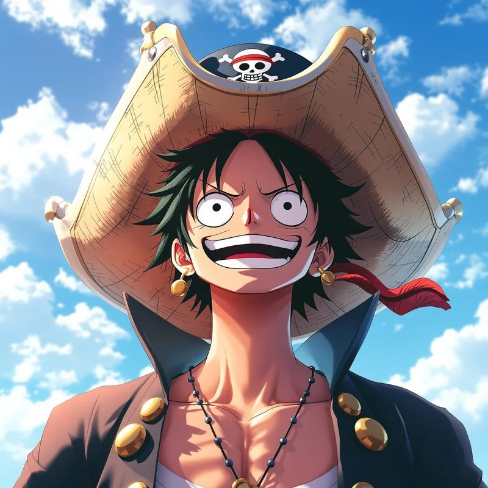
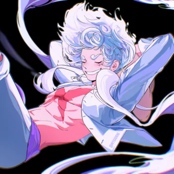
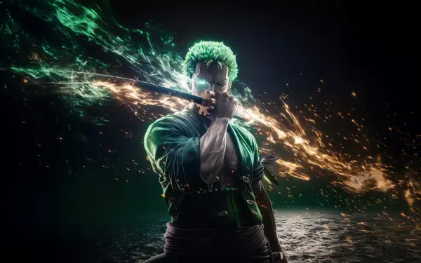
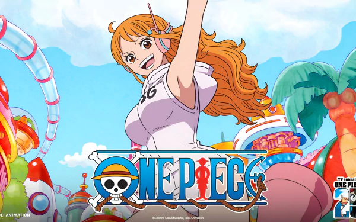
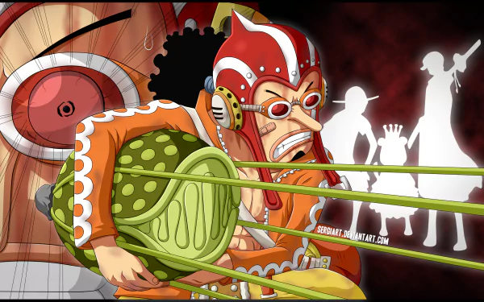
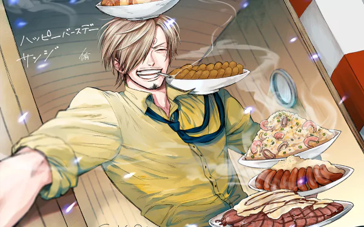
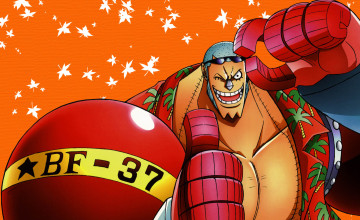
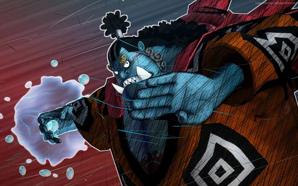
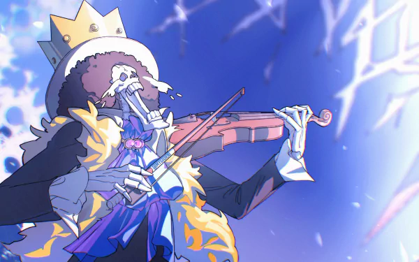

🏴☠️ به دنیای وانپیس خوش آمدید! | آخرین بروزرسانی: قسمت ۱۱۸۰ | لوفی کلاه حصیری و گروهش 🏴☠️
وان پیس (به ژاپنی: ワンピース؛ به انگلیسی: One Piece) یک مجموعهٔ مانگای ژاپنی در ژانر ماجراجویی و خیالپردازی است که توسط ایچیرو اودا نوشته و تصویرگری شده است. این مجموعه از ۲۲ ژوئیهٔ ۱۹۹۷ در مجلهٔ هفتهنامه شونن جامپ متعلق به انتشارات شوئیشا منتشر میشود. داستان دربارهٔ ماجراجوییهای مانکی دی. لوفی و گروه دزدان دریایی کلاه حصیری در جستوجوی گنج افسانهای وان پیس است؛ گنجی که یافتن آن میتواند لوفی را به پادشاه دزدان دریایی تبدیل کند.
وان پیس به یکی از موفقترین مجموعههای مانگای تاریخ تبدیل شده و علاوه بر مانگا، اقتباسهای متعددی از جمله مجموعهٔ تلویزیونی انیمه، فیلمهای پویانمایی، بازیهای ویدئویی و یک مجموعهٔ تلویزیونی با بازیگران واقعی داشته است. این مجموعه در مارس ۲۰۲۶ از مرز ۶۰۰ میلیون نسخه شمارگان جهانی عبور کرد.
جهان داستان
جهان وان پیس از دریاها، جزایر و قلمروهای گوناگونی تشکیل شده است. یکی از مهمترین مناطق آن گرند لاین است؛ مسیری دریایی که بسیاری از دزدان دریایی برای یافتن گنج وان پیس در آن سفر میکنند. در این جهان، گروههای مختلفی مانند دزدان دریایی، نیروی دریایی، دولت جهانی و سازمانهای مستقل حضور دارند. رقابت و تعارض میان این نیروها بخش مهمی از پیشبرد داستان را شکل میدهد.میوههای شیطانی
میوههای شیطانی از عناصر مهم جهان داستان هستند. این میوهها پس از مصرف، تواناییهای غیرمعمولی به افراد میدهند؛ اما مصرفکنندگان آنها توانایی شنا کردن را از دست میدهند. این میوهها در سه گروه اصلی دستهبندی میشوند: پارامیشیا: به مصرفکننده تواناییهای ویژهای در زمینههای مختلف میدهد. زوان: امکان تبدیل شدن به حیوانات یا موجودات دیگر را فراهم میکند. لوگیا: به مصرفکننده امکان تبدیل بدن به یک عنصر طبیعی و کنترل آن را میدهد. این تواناییها در کنار مهارتهای فردی و قدرت اراده، نقش مهمی در نبردها و رویدادهای داستان دارند.انتشار در:
هفتهنامه شونن جامپ
استودیو:
توئی انیمیشن
ژانر:
ماجراجویی
قسمت ها:
1180 قسمت تاالان
سال انتشار:
22 ژوئیهٔ 1997
نویسنده:
ایچیرو اودا
ONE PIECE






 که با لقب «عاشق آبنبات پنبهای» (Cotton Candy Lover) نیز شناخته میشود، شخصیتی داستانی در مجموعه مانگا و فرنچایز رسانهای وان پیس است که ائیچیرو اودا آن را خلق کرده است. این شخصیت نخستین بار در فصل ۱۳۴ مجموعه ظاهر شد؛ این فصل نخستین بار در ۸ مه ۲۰۰۰ در هفتهنامه شونن جامپ متعلق به انتشارات شوئیشا در ژاپن منتشر شد. او ششمین عضو دزدان دریایی کلاهحصیری و پنجمین نفری است که به این گروه میپیوندد و بهعنوان پزشک گروه فعالیت میکند.")
 که با لقب «فرزند شیطان» (Devil Child) نیز شناخته میشود، یک شخصیت داستانی در فرنچایز وان پیس است که ائیچیرو اودا آن را خلق کرده است. این شخصیت نخستین بار در فصل ۱۱۴ مجموعه ظاهر شد؛ این فصل نخستین بار در ۲۲ نوامبر ۱۹۹۹ در هفتهنامه شونن جامپ متعلق به انتشارات شوئیشا در ژاپن منتشر شد.
در این مجموعه، روبین در ابتدا بهعنوان یکی از شخصیتهای مخالف معرفی میشود، اما سرانجام به هفتمین عضو گروه دزدان دریایی کلاهحصیری و ششمین نفری که به این گروه میپیوندد، تبدیل میشود.")



شخصیت های انیمه وان پیس!
مانکی دی. لوفی؛ کاپیتان گروه و شخصیت اصلی داستانرورونوا زورو؛ شمشیرزن گروه
نامی؛ دریانورد و نقشهکش گروه
اوسوپ؛ تیرانداز گروه
سانجی؛ آشپز گروه
تونی تونی چوپر؛ پزشک گروه
نیکو روبین؛ باستانشناس گروه
فرانکی؛ کشتیساز گروه
بروک؛ موسیقیدان گروه
جینبی؛ سکاندار گروه
بونتی های شخصیت ها!
مانکی دی. لوفی: 3,000,000,000
3,000,000,000
رورونوا زورو:
1,111,000,000
نامی :
366,000,000
اوسوپ:
500,000,000
سانجی:
1,032,000,000
تونی تونی چوپر:
1000
نیکو روبین:
930,000,000
فرانکی:
394,000,000
بروک:
383,000,000
جینبه:
110,000,000,000
داستان!
داستان وان پیس در جهانی خیالی جریان دارد که در آن دزدان دریایی برای دستیابی به ثروت، قدرت و شهرت در دریاهای مختلف به ماجراجویی میپردازند. پس از اعدام گول دی. راجر، که با عنوان پادشاه دزدان دریایی شناخته میشد، او از وجود گنجی افسانهای به نام «وان پیس» خبر میدهد. این سخن موجب آغاز دورهای میشود که به عصر بزرگ دزدان دریایی شهرت پیدا میکند؛ دورهای که در آن افراد بسیاری برای یافتن این گنج و کسب عنوان پادشاه دزدان دریایی راهی دریاها میشوند. شخصیت اصلی داستان، مانکی دی. لوفی، پسری جوان است که آرزوی تبدیل شدن به پادشاه دزدان دریایی را دارد. او در کودکی با خوردن یک میوهٔ شیطانی توانایی کشیدهشدن بدنش مانند لاستیک را به دست میآورد؛ در مقابل، توانایی شنا کردن را از دست میدهد. لوفی سفر خود را از دریای ایست بلو آغاز میکند و در مسیر یافتن گنج وان پیس، افرادی با اهداف و رؤیاهای متفاوت را به گروه خود دعوت میکند. این گروه که با نام دزدان دریایی کلاه حصیری شناخته میشوند، در مسیر خود با جزایر ناشناخته، گروههای رقیب، نیروهای دریایی و ساختار سیاسی جهان داستان روبهرو میشوند. روایت مجموعه در قالب حماسهها و آرکهای داستانی متعددی پیش میرود. از بخشهای شناختهشدهٔ آن میتوان به ایست بلو، آلاباستا، جزیرهٔ آسمانی، واتر سون و انیس لابی، جنگ سران، جزیرهٔ فیشمن، درسروزا، جزیرهٔ سراسر کیک، کشور وانو، اگهد و الباف اشاره کرد.میوههای شیطانی!
میوههای شیطانی از عناصر مهم جهان داستان هستند. این میوهها پس از مصرف، تواناییهای غیرمعمولی به افراد میدهند؛ اما مصرفکنندگان آنها توانایی شنا کردن را از دست میدهند. این میوهها در سه گروه اصلی دستهبندی میشوند: پارامیشیا: به مصرفکننده تواناییهای ویژهای در زمینههای مختلف میدهد. زوان: امکان تبدیل شدن به حیوانات یا موجودات دیگر را فراهم میکند. لوگیا: به مصرفکننده امکان تبدیل بدن به یک عنصر طبیعی و کنترل آن را میدهد. این تواناییها در کنار مهارتهای فردی و قدرت اراده، نقش مهمی در نبردها و رویدادهای داستان دارند.فیلمهای سینمایی و برنامههای ویژه!
بر اساس مانگا و مجموعهٔ تلویزیونی وان پیس، فیلمهای سینمایی پویانمایی و برنامههای ویژهٔ تلویزیونی متعددی تولید شدهاند. از جمله فیلمهای شناختهشدهٔ این مجموعه میتوان به موارد زیر اشاره کرد: One Piece: Strong World One Piece Film: Z One Piece Film: Gold One Piece: Stampede One Piece Film: Red فیلمهای سینمایی این مجموعه توسط توئی انیمیشن تولید شدهاند. تا اکتبر ۲۰۲۴، تعداد فیلمهای بلند سینمایی وان پیس به ۱۵ عنوان رسیده بود.بازخورد و دستاوردها!
وان پیس از نظر شمارگان جهانی و گستردگی اقتباسهای رسانهای، یکی از موفقترین آثار صنعت مانگا محسوب میشود. در ۴ مارس ۲۰۲۶، انتشارات شوئیشا اعلام کرد شمارگان جهانی این مجموعه از ۶۰۰ میلیون نسخه عبور کرده است. از این میزان، بیش از ۴۵۰ میلیون نسخه در ژاپن و بیش از ۱۵۰ میلیون نسخه در سایر کشورهای جهان منتشر شده بود. در سال ۲۰۱۲، وان پیس جایزهٔ بزرگ انجمن کارتونیستهای ژاپن را دریافت کرد..png)